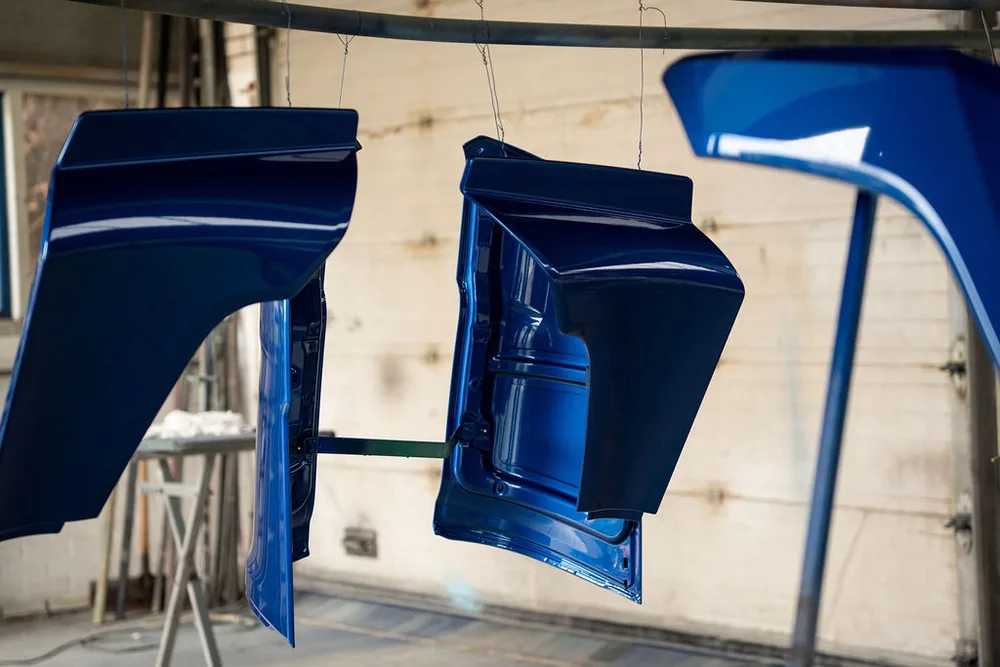
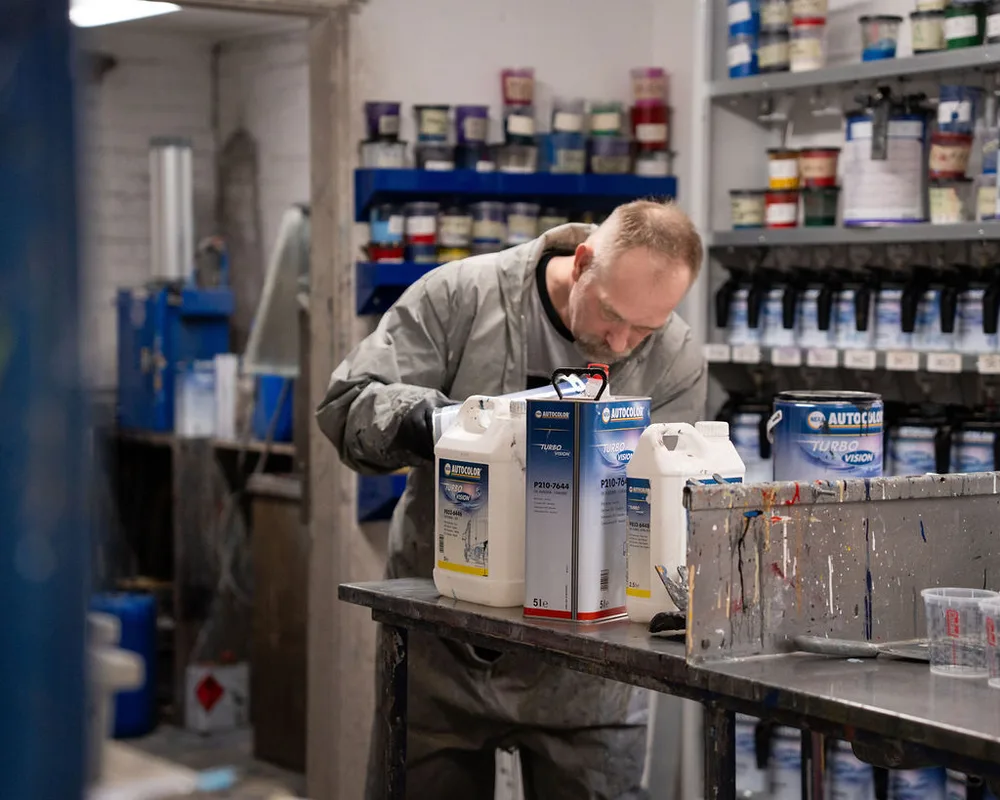
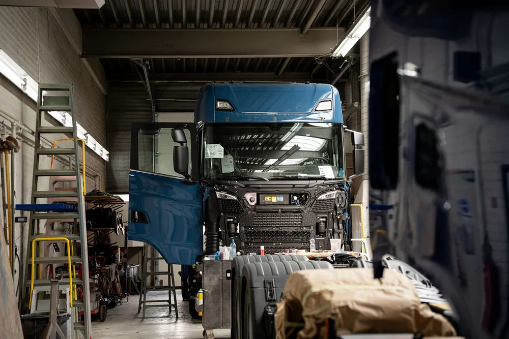

Compleet overspuiten
Van cabine tot bumper: de hele wagen in een nieuwe kleur, strak en gelijkmatig.
Een verflaag aanbrengen is een vak apart. Wij werken met specialisten en professioneel materiaal, in eigen spuitcabines: van complete respray tot deelspuitwerk dat naadloos aansluit.
Van cabine tot bumper: de hele wagen in een nieuwe kleur, strak en gelijkmatig.
Alleen het beschadigde of versleten onderdeel opnieuw spuiten, naadloos aansluitend op de rest.
Nieuwe of tweedehands bedrijfswagen in uw eigen kleuren, klaar voor de weg.
Ook keukens, balies en meubels spuiten wij in elke gewenste kleur.
Zo werkt het
Op basis van een RAL-code, fabriekscode of een foto van de gewenste kleur.
Schuren, plamuren en prepareren voor een strakke, gelijkmatige basis.
In onze professionele spuitcabines, laag voor laag, door een specialist.
Pas na een grondige controle gaat het resultaat de deur uit.
Sfeer uit de spuitcabine



Bekijk meer projecten in Ons werk.
Veelgestelde vragen
Vrijwel elke kleur is mogelijk, op basis van een RAL-code, fabriekscode of een kleurstaal dat u aanlevert.
Ja, deelspuitwerk sluit naadloos aan op de rest van de wagen. Dat scheelt tijd en kosten ten opzichte van een complete respray.
Ja, naast voertuigen spuiten wij ook interieurs, keukens en balies in elke gewenste kleur.
Dat hangt af van de omvang van het werk. Bij de intake geven we een realistische inschatting van de doorlooptijd. Zie ook schadeherstel en vrachtwagens & transport.
Bel gerust voor overleg, of app foto's van de wagen. Dan denken wij meteen met u mee.